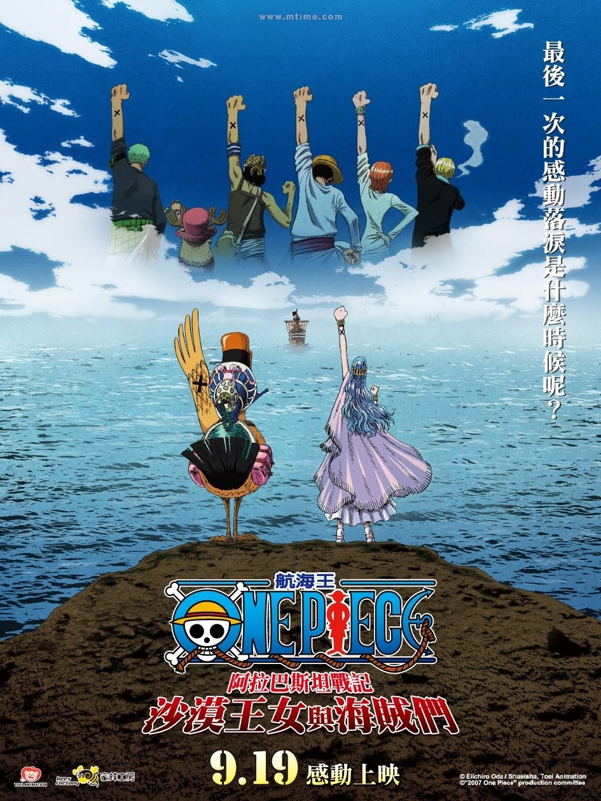
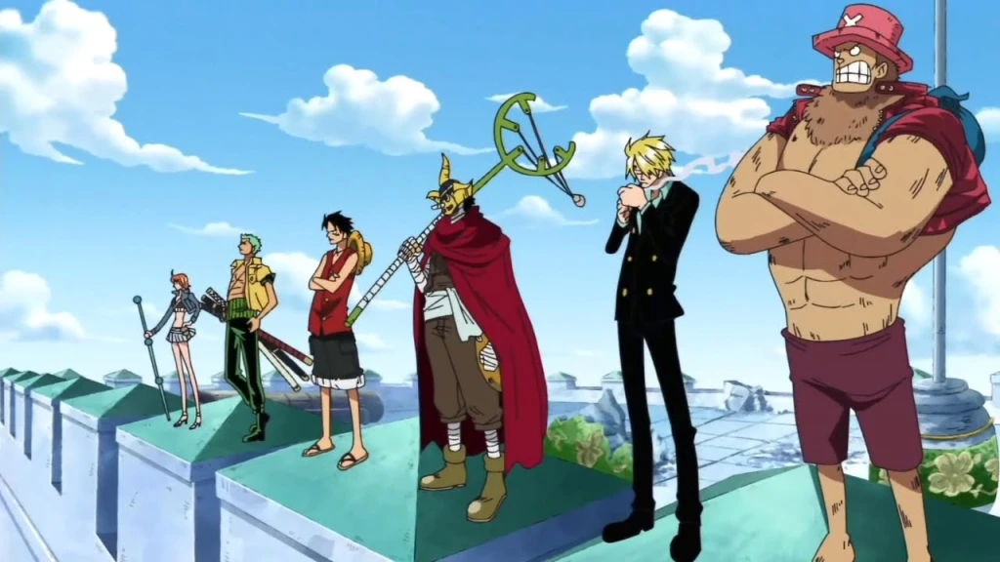
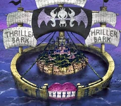
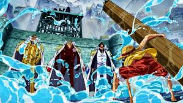

Los arcos antes del time skip
Saga del East Blue
La serie comienza con la ejecución de Gol D. Roger, un hombre conocido como «El Rey de los Piratas» (海賊王 Kaizoku-Ō?), quien justo antes de su muerte, hace mención de su gran tesoro legendario, el One Piece (ワンピース Wan Pīsu?), y que puede ser tomado por quien lo encuentre. Esto marca el inicio de una era conocida como la Gran Era Pirata (大海賊時代 Daikaizokujidai?). Como resultado, un sinnúmero de piratas zarparon hacia Grand Line, el mar donde se encuentra dicho tesoro, con el objetivo de encontrarlo. Más de veinte años después de la muerte de Roger, el One Piece sigue sin ser encontrado. Un joven llamado Monkey D. Luffy, quien comió la Fruta Goma Goma, la cual le otorgó elasticidad, inspirado por la admiración de su sombrero de paja que desde su infancia le tiene al pirata legendario Shanks, comienza su aventura desde su hogar en el mar East Blue para encontrar el One Piece y autoproclamarse como el nuevo Rey de los Piratas. Con el fin de crear y convertirse en el capitán de una tripulación propia reclutando varios miembros para superar a la de Shanks, recluta durante su viaje en el East Blue a Roronoa Zoro, un infame espadachín y ex-cazarrecompensas, Nami, una navegante estafadora, Usopp, un francotirador mentiroso, y Sanji, un cocinero enamoradizo, además de conseguir un barco llamado el Going Merry. Tras viajar por varias islas en las que se enfrenta a varios enemigos, la tripulación llega a la entrada de Grand Line.

Saga de Arabasta
Después de llegar finalmente a la Grand Line, el grupo conoce en la entrada a Crocus, el guardián del faro y cuidador de Laboon, una gigantesca ballena. Él les da información para navegar por el mar y sobre Laugh Tale, la última isla donde Roger dejó el One Piece. También conocen a Nefertari Vivi, una princesa que desea salvar a su país, el Reino de Arabasta, de manos de una peligrosa organización criminal llamada Baroque Works, viajando ella y su pato mascota Karoo con la tripulación durante un tiempo. Durante su trayecto hacia Arabasta, los piratas pasan por Little Garden, una isla donde entablan amistad con dos gigantes Dorry y Brogy del lugar, y la Isla de Drum, una isla invernal donde invitan a un reno antropomórfico y médico llamado Tony Tony Chopper a unirse a la tripulación. Una vez que la tripulación llega hasta de Arabasta, comienzan una serie de batallas contra la organización Baroque Works y su líder, el Guerrero del Mar Sir Crocodile. Tras derrotarles y liberar al reino, la tripulación se despide de Vivi. Inmediatamente después, Nico Robin, una arqueóloga que antes pertenecía a Baroque Works como vicepresidenta, se une a la tripulación.

Saga Skypea
Poco después, queriendo buscar una ruta a la legendaria "Isla del Cielo", llegan a Jaya, una isla, donde conocen Marshal D. Teach, alias «Barbanegra», quien también aspira a convertirse en el Rey de los Piratas. La tripulación viaja hasta una isla del cielo llamada Skypiea, donde sin querer, se unen a una guerra incipiente entre dos tribus habitantes de dicho lugar, lo que los lleva a enfrentarse al líder de la isla, Enel, quien posee el poder de crear relámpagos y electricidad. Luffy logra derrotarlo y, con ello, terminar la guerra. También al abandonar la isla obtienen gran cantidad de oro, el cual deciden usarlo para reparar el Going Merry, y de paso encontrar un carpintero para arreglar futuros daños en el barco.

Saga de Water Seven
Navegando en su nuevo barco, los Piratas de Sombrero de Paja se encuentran con un barco fantasma, donde conocen a Brook, un músico esquelético que fue revivido con una fruta del diablo, y además, a quien Gecko Moria, otro miembro de los Siete Guerreros del Mar y capitán del gigantesco barco pirata Thriller Bark, le robó su sombra. Una vez que los piratas derrotan a Moria, Brook se une a la tripulación como su músico.

Saga de Thriller Bark
El francotirador y contador de historias, que sueña con convertirse en un valiente guerrero del mar como su padre. Se unió a la tripulación tras ayudar a liberar su pueblo. Aunque miedoso, demuestra gran valor cuando más se necesita.

Saga de Marine Ford
Después de llegar al Archipiélago Sabaody, la tripulación se prepara para ingresar al Nuevo Mundo, la segunda mitad del Grand Line. Ahí, se hacen amigos de Silvers Rayleigh, el antiguo primer oficial de la tripulación de los Piratas de Roger, y le piden que recubra su barco para que puedan atravesar la Red Line por medio del subsuelo oceánico. Pero tras verse involucrados en una revuelta causada por un Noble Mundial, llega al lugar uno de los Siete Guerreros del Mar, Bartholomew Kuma, quien los separa enviándolos a diferentes lugares mediante sus poderes. Luffy llega a una isla afrodisíaca llamada Amazon Lily, donde únicamente la habitan mujeres, y gobernada por Boa Hancock, una de los Siete Guerreros del Mar, la cual acaba enamorandose de él. Una vez que el muchacho se entera de que su hermano adoptivo, Portgas D. Ace, se encuentra prisionero en Impel Down, Luffy emprende un viaje para liberarlo. Luffy logra soltar a otros prisioneros, como al hombre-pez y miembro de los Guerreros del Mar Jinbe, a quien encerraron tras negarse a colaborar con el Gobierno. Sin embargo, descubre que su hermano ya ha sido llevado a Marineford para ser ejecutado. Allí, una guerra estalla entre las fuerzas de la Marina y la tripulación del renombrado Edward Newgate, alias «Barbablanca». Al clímax de la batalla, Ace y Barbablanca son asesinados. Luffy lamenta la pérdida de Ace y se quiebra emocionalmente, al igual que la pérdida que vivió de pequeño con su otro hermano adoptivo, Sabo. Con la ayuda de Jinbe y a petición de Rayleigh, Luffy decide enviar a sus amigos el mensaje de esperar dos años hasta volver a encontrarse, pasando todos ellos por un intenso régimen de entrenamiento.
